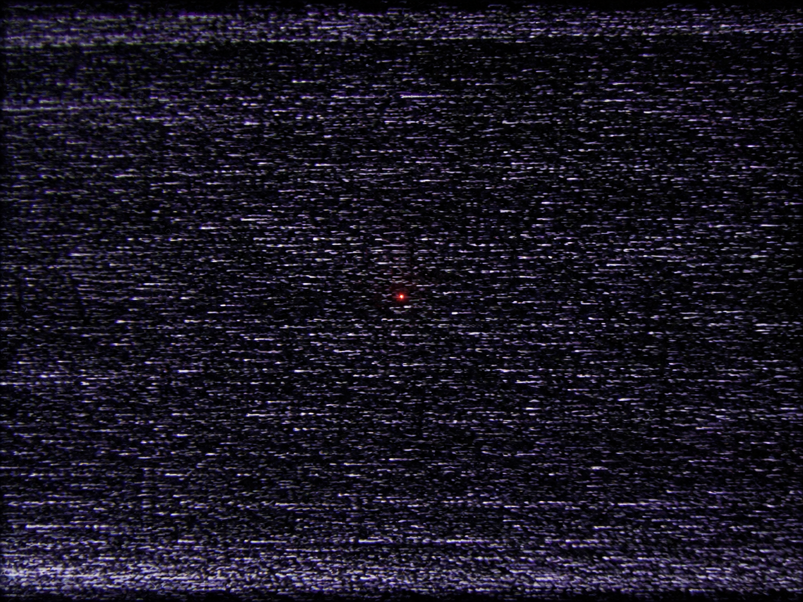

▒▒▒▒▒▒▒▒▒▒▒▒▒▒▒▒▒▒▒▒▒▒▒▒▒▒▒▒▒▒▒▒▒▒
· D E S C E N T · 21 / 40 ·
▒▒▒▒▒▒▒▒▒▒▒▒▒▒▒▒▒▒▒▒▒▒▒▒▒▒▒▒▒▒▒▒▒▒
hush

The whole greedy tower, cooled to grit.
And under the grit, almost out, one red point.
It would have died too, if it had stayed loud.